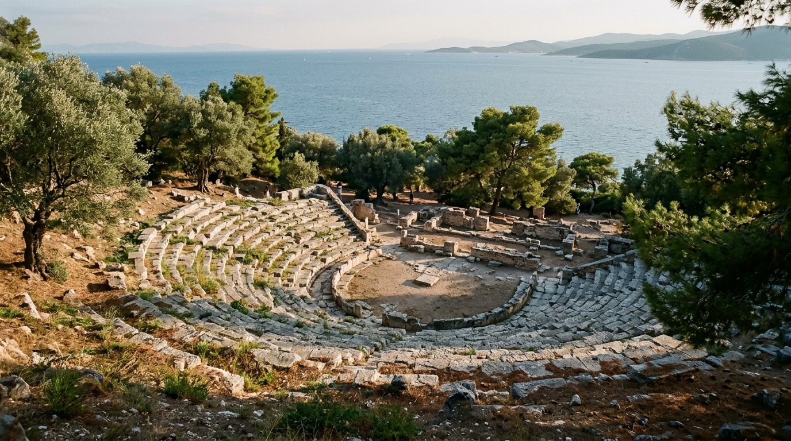
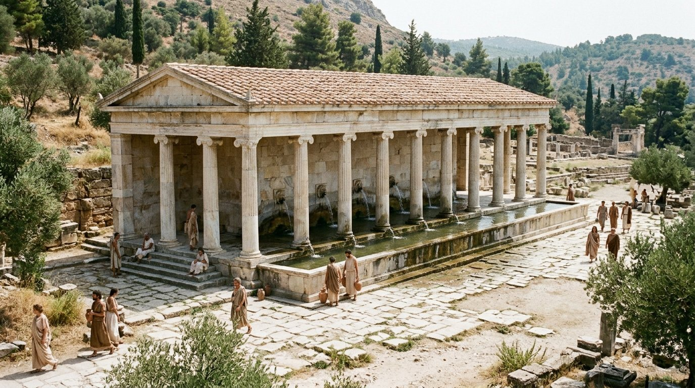
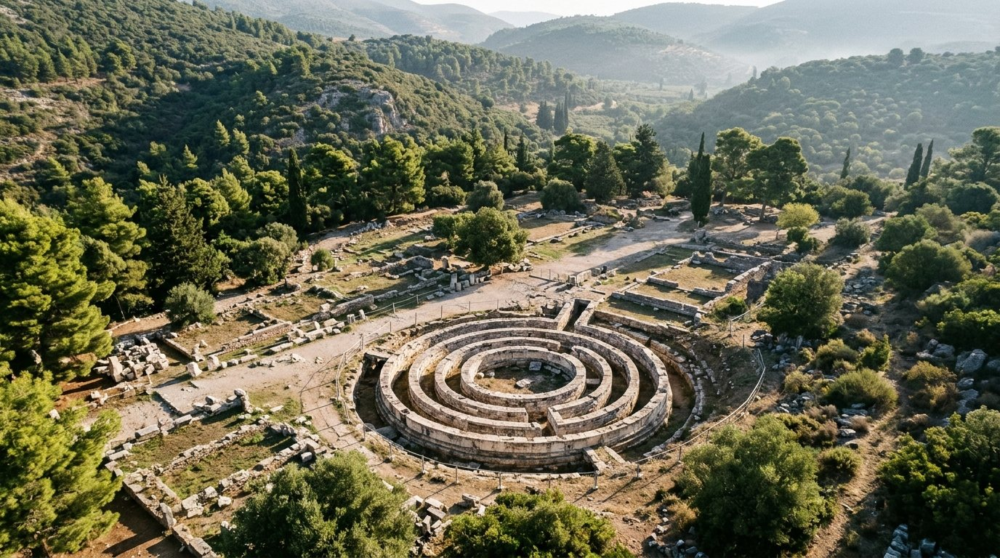

Epidauro: el Santuario de Asclepio que Describió Pausanias
Epidauro es sinónimo de dos cosas: el teatro de acústica perfecta y el santuario de Asclepio, el dios griego de la medicina, al que acudían enfermos de todo el mundo griego para dormir en sus pórticos y sanar en sueños. Ambos están en el valle del gran santuario, a unos kilómetros de la costa. Pero la ciudad de Epidauro, la polis que administraba ese santuario, estaba junto al mar, y allí también se veneraba al dios. Lo sabíamos por un solo testigo: Pausanias.
Un viajero con buena memoria
En el siglo II d.C., el viajero griego Pausanias recorrió el Peloponeso y lo describió con minucia en su Descripción de Grecia. Al llegar a la ciudad de Epidauro mencionó, entre otros monumentos, un recinto dedicado a Asclepio y a su esposa Epione, con estatuas de ambos al aire libre. Durante siglos, ese pasaje fue una frase sin lugar: nadie sabía dónde estaba el recinto ni si había sobrevivido.
El profesor Vassilis Lambrinoudakis, de la Universidad Nacional y Kapodistríaca de Atenas, ha dedicado más de cincuenta años a excavar en Epidauro. En noviembre de 2026 presentó la síntesis de las investigaciones realizadas junto al pequeño teatro de la ciudad antigua, y su conclusión es que el recinto de Pausanias por fin tiene dirección.

Agua para curar
Los restos encajan con un santuario de sanación. El elemento principal es una fuente monumental del siglo IV a.C. con columnas jónicas, conectada mediante un canal subterráneo con un pozo sagrado. El agua era esencial en el culto de Asclepio: los enfermos se purificaban antes de acercarse al dios y muchas curas incluían baños y abluciones. Junto a la fuente aparecieron exvotos, las ofrendas que los fieles dejaban para pedir o agradecer la curación, con inscripciones que mencionan a Asclepio.
El hallazgo se completa con una estatua femenina de mármol mayor que el tamaño natural. Su presencia en un recinto que Pausanias atribuye a Asclepio y a Epione invita a preguntarse si no estamos ante la propia esposa del dios, la diosa que calmaba el dolor, cuyo nombre significa precisamente la que suaviza.
Un culto más antiguo de lo que creíamos
La síntesis de Lambrinoudakis incluye otra novedad, esta vez en el gran santuario del valle. Bajo el Tholos, el enigmático edificio circular del siglo IV a.C. cuyos cimientos forman un laberinto de anillos concéntricos, se han identificado estructuras de época arcaica. Según el equipo, esos restos indican que el culto sanador comenzó allí unos sesenta años antes de lo que se estimaba.
El Tholos es uno de los edificios más discutidos de la arquitectura griega: algunos lo interpretan como la morada subterránea de las serpientes sagradas de Asclepio, otros como el lugar de un rito secreto o la tumba simbólica del dios. Encontrar bajo él una fase anterior obliga a reescribir la secuencia del santuario y a preguntarse qué había allí antes de que se levantara el edificio circular.

Por qué importa
El trabajo de Lambrinoudakis reconcilia dos mundos que a veces se miran con desconfianza: la arqueología de campo y las fuentes literarias. Pausanias describió lo que vio, y medio siglo de excavación paciente ha devuelto a su texto un lugar físico. La medicina de Asclepio, mezcla de fe, agua, descanso y observación, fue el origen de una tradición que llevaría a Hipócrates y, a través de él, a nuestra propia medicina.
Las investigaciones continúan con el estudio de los exvotos y de la estatua de mármol, cuya identificación definitiva será clave para entender cómo se veneraba a la pareja divina en la ciudad que dio nombre al santuario más famoso de Grecia.
"Pausanias describió lo que vio, y medio siglo de excavación paciente ha devuelto a su texto un lugar físico."
— HISTORIKA · Hallazgos II
Fuentes y referencias
- Arkeonews (11/2026)
- Greek City Times (11/11/2026)
- Pausanias, Descripción de Grecia, libro II
Lee la revista
Hojea gratis Hallazgos II →